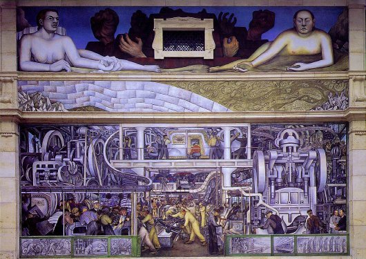

Detroit Industry Murals (South Wall)
Diego Rivera · 1932–33 · Fresco · Detroit Institute of Arts
In copyright. Look and learn: shown for study, not for download.
Wilhelm Valentiner, director of the Detroit Institute of Arts, commissioned the twenty-seven frescoes in 1932, and Edsel Ford contributed $20,000. Rivera spent three months touring the Ford River Rouge plants and made hundreds of sketches. He and his assistants finished in eight months, routinely working fifteen-hour days, and Rivera lost 100 pounds over the course of the project. The museum paid for the materials; he paid his assistants out of his fee.